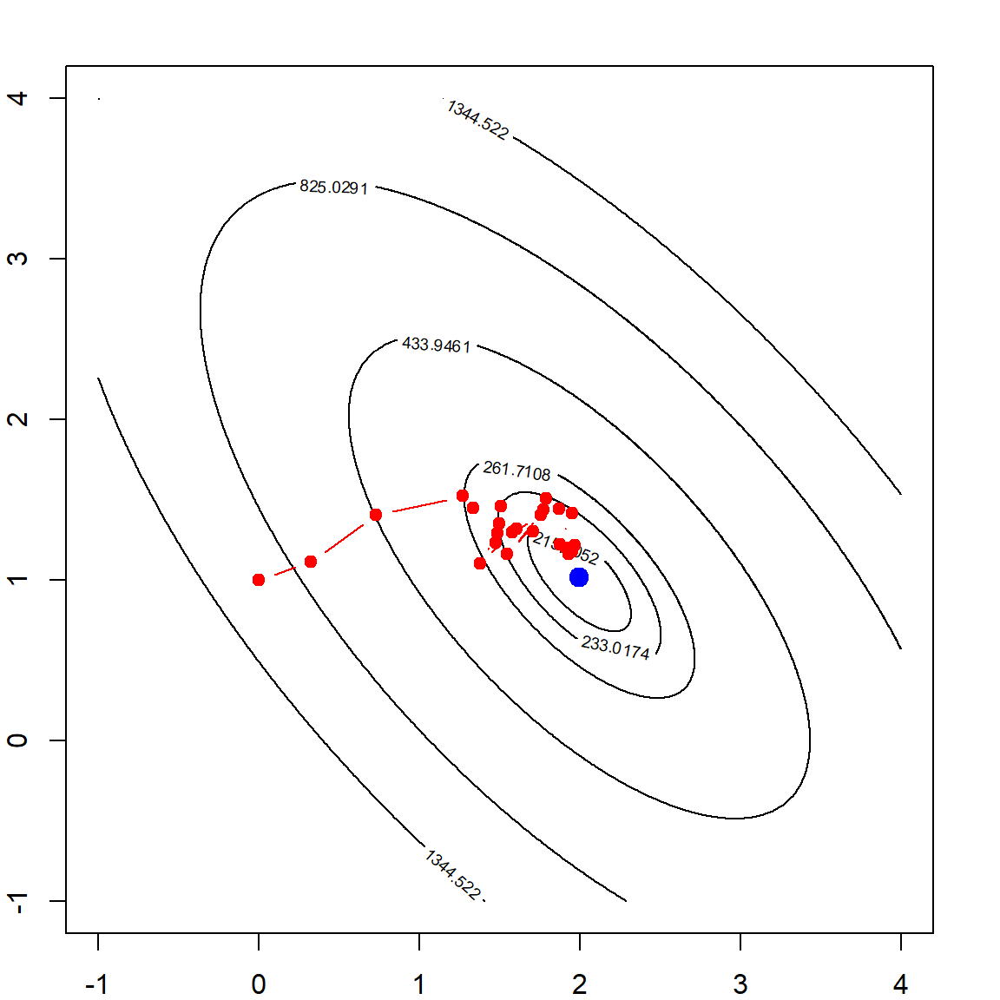

Chapter 3 Linear Regression and Model Selection
This chapter severs several purposes. First, we will review some basic knowledge of linear regression. This includes the concept of vector space, projection, which leads to estimating parameters of a linear regression. Most of these knowledge are covered in the prerequisite so you shouldn’t find these concepts too difficult to understand. Secondly, we will mainly use the lm() function as an example to demonstrate some features of R. This includes extracting results, visualizations, handling categorical variables, prediction and model selection. These concepts will be useful for other models. Finally, we will introduce several model selection criteria and algorithms to perform model selection.
3.1 Example: real estate data
This Real Estate data (Yeh and Hsu 2018) is provided on the UCI machine learning repository. The goal of this dataset is to predict the unit house price based on six different covariates:
date: The transaction date (for example, 2013.250=2013 March, 2013.500=2013 June, etc.)age: The house age (unit: year)distance: The distance to the nearest MRT station (unit: meter)stores: The number of convenience stores in the living circle on foot (integer)latitude: Latitude (unit: degree)longitude: Longitude (unit: degree)price: House price of unit area
realestate = read.csv("data/realestate.csv", row.names = 1)
library(DT)
datatable(realestate, filter = "top", rownames = FALSE,
options = list(pageLength = 8))3.2 Notation and Basic Properties
We usually denote the observed covariates data as the design matrix \(\mathbf{X}\), with dimension \(n \times p\). Hence in this case, the dimension of \(\mathbf{X}\) is \(414 \times 7\). The \(j\)th variable is simply the \(j\)th column of this matrix, which is denoted as \(\mathbf{x}_j\). The outcome \(\mathbf{y}\) (price) is a vector of length \(414\). Please note that we usually use a “bold” symbol to represent a vector, while for a single element (scalar), such as the \(j\)th variable of subject \(i\), we use \(x_{ij}\).
A linear regression concerns modeling the relationship (in matrix form)
\[\mathbf{y}_{n \times 1} = \mathbf{X}_{n \times p} \boldsymbol \beta_{p \times 1} + \boldsymbol \epsilon_{n \times 1}\] And we know that the solution is obtained by minimizing the residual sum of squares (RSS):
\[ \begin{align} \widehat{\boldsymbol \beta} &= \underset{\boldsymbol \beta}{\mathop{\mathrm{arg\,min}}} \sum_{i=1}^n \left(y_i - x_i^\text{T}\boldsymbol \beta\right)^2 \\ &= \underset{\boldsymbol \beta}{\mathop{\mathrm{arg\,min}}} \big( \mathbf y - \mathbf{X} \boldsymbol \beta \big)^\text{T}\big( \mathbf y - \mathbf{X} \boldsymbol \beta \big) \end{align} \] Classic solution can be obtained by taking the derivative of RSS w.r.t \(\boldsymbol \beta\) and set it to zero. This leads to the well known normal equation:
\[ \begin{align} \frac{\partial \text{RSS}}{\partial \boldsymbol \beta} &= -2 \mathbf{X}^\text{T}(\mathbf{y}- \mathbf{X}\boldsymbol \beta) \doteq 0 \\ \Longrightarrow \quad \mathbf{X}^\text{T}\mathbf{y}&= \mathbf{X}^\text{T}\mathbf{X}\boldsymbol \beta \end{align} \] Assuming that \(\mathbf{X}\) is full rank, then \(\mathbf{X}^\text{T}\mathbf{X}\) is invertible. Then, we have
\[ \widehat{\boldsymbol \beta} = (\mathbf{X}^\text{T}\mathbf{X})^{-1}\mathbf{X}^\text{T}\mathbf{y} \] Some additional concepts are frequently used. The fitted values \(\widehat{\mathbf{y}}\) are essentially the prediction of the original \(n\) training data points:
\[ \begin{align} \widehat{\mathbf{y}} =& \mathbf{X}\boldsymbol \beta\\ =& \underbrace{\mathbf{X}(\mathbf{X}^\text{T}\mathbf{X})^{-1}\mathbf{X}^\text{T}}_{\mathbf{H}} \mathbf{y}\\ \doteq& \mathbf{H}_{n \times n} \mathbf{y} \end{align} \] where \(\mathbf{H}\) is called the “hat” matrix. It is a projection matrix that projects any vector (\(\mathbf{y}\) in our case) onto the column space of \(\mathbf{X}\). A project matrix enjoys two properties
- Symmetric: \(\mathbf{H}^\text{T}= \mathbf{H}\)
- Idempotent \(\mathbf{H}\mathbf{H}= \mathbf{H}\)
The residuals \(\mathbf{r}\) can also be obtained using the hat matrix:
\[ \mathbf{r}= \mathbf{y}- \widehat{\mathbf{y}} = (\mathbf{I}- \mathbf{H}) \mathbf{y}\] From the properties of a projection matrix, we also know that \(\mathbf{r}\) should be orthogonal to any vector from the column space of \(\mathbf{X}\). Hence,
\[\mathbf{X}^\text{T}\mathbf{r}= \mathbf{0}_{p \times 1}\]
The residuals is also used to estimate the error variance:
\[\widehat\sigma^2 = \frac{1}{n-p} \sum_{i=1}^n r_i^2 = \frac{\text{RSS}}{n-p}\] When the data are indeed generated from a linear model, and with suitable conditions on the design matrix and random errors \(\boldsymbol \epsilon\), we can conclude that \(\widehat{\boldsymbol \beta}\) is an unbiased estimator of \(\boldsymbol \beta\). Its variance-covariance matrix satisfies
\[
\begin{align}
\text{Var}(\widehat{\boldsymbol \beta}) &= \text{Var}\big( (\mathbf{X}^\text{T}\mathbf{X})^{-1}\mathbf{X}^\text{T}\mathbf{y}\big) \nonumber \\
&= \text{Var}\big( (\mathbf{X}^\text{T}\mathbf{X})^{-1}\mathbf{X}^\text{T}(\mathbf{X}\boldsymbol \beta+ \boldsymbol \epsilon) \big) \nonumber \\
&= \text{Var}\big( (\mathbf{X}^\text{T}\mathbf{X})^{-1}\mathbf{X}^\text{T}\boldsymbol \epsilon) \big) \nonumber \\
&= (\mathbf{X}^\text{T}\mathbf{X})^{-1}\mathbf{X}^\text{T}\mathbf{X}(\mathbf{X}^\text{T}\mathbf{X})^{-1} \mathbf{I}\sigma^2 \nonumber \\
&= (\mathbf{X}^\text{T}\mathbf{X})^{-1}\sigma^2
\end{align}
\]
All of the above mentioned results are already implemented in R through the lm() function to fit a linear regression.
3.3 Using the lm() Function
Let’s consider a simple regression that uses age and distance to model price. We will save the fitted object as lm.fit
lm.fit = lm(price ~ age + distance, data = realestate)This syntax contains three components:
data =specifies the dataset- The outcome variable should be on the left hand side of
~ - The covariates should be on the right hand side of
~
To look at the detailed model fitting results, use the summary() function
lm.summary = summary(lm.fit)
lm.summary
##
## Call:
## lm(formula = price ~ age + distance, data = realestate)
##
## Residuals:
## Min 1Q Median 3Q Max
## -36.032 -4.742 -1.037 4.533 71.930
##
## Coefficients:
## Estimate Std. Error t value Pr(>|t|)
## (Intercept) 49.8855858 0.9677644 51.547 < 2e-16 ***
## age -0.2310266 0.0420383 -5.496 6.84e-08 ***
## distance -0.0072086 0.0003795 -18.997 < 2e-16 ***
## ---
## Signif. codes: 0 '***' 0.001 '**' 0.01 '*' 0.05 '.' 0.1 ' ' 1
##
## Residual standard error: 9.73 on 411 degrees of freedom
## Multiple R-squared: 0.4911, Adjusted R-squared: 0.4887
## F-statistic: 198.3 on 2 and 411 DF, p-value: < 2.2e-16This shows that both age and distance are highly significant for predicting the price. In fact, this fitted object (lm.fit) and the summary object (lm.summary) are both saved as a list. This is pretty common to handle an output object with many things involved. We may peek into this object to see what are provided using a $ after the object.

The str() function can also display all the items in a list.
str(lm.summary)Usually, printing out the summary is sufficient. However, further details can be useful for other purposes. For example, if we interested in the residual vs. fits plot, we may use
plot(lm.fit$fitted.values, lm.fit$residuals,
xlab = "Fitted Values", ylab = "Residuals",
col = "darkorange", pch = 19, cex = 0.5)
It seems that the error variance is not constant (as a function of the fitted values), hence additional techniques may be required to handle this issue. However, that is beyond the scope of this book.
3.3.1 Adding Covariates
It is pretty simple if we want to include additional variables. This is usually done by connecting them with the + sign on the right hand side of ~. R also provide convenient ways to include interactions and higher order terms. The following code with the interaction term between age and distance, and a squared term of distance should be self-explanatory.
lm.fit2 = lm(price ~ age + distance + age*distance + I(distance^2), data = realestate)
summary(lm.fit2)
##
## Call:
## lm(formula = price ~ age + distance + age * distance + I(distance^2),
## data = realestate)
##
## Residuals:
## Min 1Q Median 3Q Max
## -37.117 -4.160 -0.594 3.548 69.683
##
## Coefficients:
## Estimate Std. Error t value Pr(>|t|)
## (Intercept) 5.454e+01 1.099e+00 49.612 < 2e-16 ***
## age -2.615e-01 4.931e-02 -5.302 1.87e-07 ***
## distance -1.603e-02 1.133e-03 -14.152 < 2e-16 ***
## I(distance^2) 1.907e-06 2.416e-07 7.892 2.75e-14 ***
## age:distance 8.727e-06 4.615e-05 0.189 0.85
## ---
## Signif. codes: 0 '***' 0.001 '**' 0.01 '*' 0.05 '.' 0.1 ' ' 1
##
## Residual standard error: 8.939 on 409 degrees of freedom
## Multiple R-squared: 0.5726, Adjusted R-squared: 0.5684
## F-statistic: 137 on 4 and 409 DF, p-value: < 2.2e-16If you choose to include all covariates presented in the data, then simply use . on the right hand side of ~. However, you should always be careful when doing this because some dataset would contain meaningless variables such as subject ID.
lm.fit3 = lm(price ~ ., data = realestate)3.3.2 Categorical Variables
The store variable has several different values. We can see that it has 11 different values. One strategy is to model this as a continuous variable. However, we may also consider to discretize it. For example, we may create a new variable, say store.cat, defined as follows
table(realestate$stores)
##
## 0 1 2 3 4 5 6 7 8 9 10
## 67 46 24 46 31 67 37 31 30 25 10
# define a new factor variable
realestate$store.cat = as.factor((realestate$stores > 0) + (realestate$stores > 4))
table(realestate$store.cat)
##
## 0 1 2
## 67 147 200
levels(realestate$store.cat) = c("None", "Several", "Many")
head(realestate$store.cat)
## [1] Many Many Many Many Many Several
## Levels: None Several ManyThis variable is defined as a factor, which is often used for categorical variables. Since this variable has three different categories, if we include it in the linear regression, it will introduce two additional variables (using the third as the reference):
lm.fit3 = lm(price ~ age + distance + store.cat, data = realestate)
summary(lm.fit3)
##
## Call:
## lm(formula = price ~ age + distance + store.cat, data = realestate)
##
## Residuals:
## Min 1Q Median 3Q Max
## -38.656 -5.360 -0.868 3.913 76.797
##
## Coefficients:
## Estimate Std. Error t value Pr(>|t|)
## (Intercept) 43.712887 1.751608 24.956 < 2e-16 ***
## age -0.229882 0.040095 -5.733 1.91e-08 ***
## distance -0.005404 0.000470 -11.497 < 2e-16 ***
## store.catSeveral 0.838228 1.435773 0.584 0.56
## store.catMany 8.070551 1.646731 4.901 1.38e-06 ***
## ---
## Signif. codes: 0 '***' 0.001 '**' 0.01 '*' 0.05 '.' 0.1 ' ' 1
##
## Residual standard error: 9.279 on 409 degrees of freedom
## Multiple R-squared: 0.5395, Adjusted R-squared: 0.535
## F-statistic: 119.8 on 4 and 409 DF, p-value: < 2.2e-16There are usually two types of categorical variables:
- Ordinal: the numbers representing each category is ordered, e.g., how many stores in the neighborhood. Oftentimes nominal data can be treated as a continuous variable.
- Nominal: they are not ordered and can be represented using either numbers or letters, e.g., ethnic group.
The above example is treating store.cat as a nominal variable, and the lm() function is using dummy variables for each category. This should be our default approach to handle nominal variables.
3.4 Model Selection Criteria
We will use the diabetes dataset from the lars package as a demonstration of model selection. Ten baseline variables include age, sex, body mass index, average blood pressure, and six blood serum measurements. These measurements were obtained for each of n = 442 diabetes patients, as well as the outcome of interest, a quantitative measure of disease progression one year after baseline. More details are available in Efron et al. (2004). Our goal is to select a linear model, preferably with a small number of variables, that can predict the outcome. To select the best model, commonly used strategies include Marrow’s \(C_p\), AIC (Akaike information criterion) and BIC (Bayesian information criterion). Further derivations will be provide at a later section.
# load the diabetes data
library(lars)
## Loaded lars 1.2
data(diabetes)
diab = data.frame(cbind(diabetes$x, "Y" = diabetes$y))
# fit linear regression with all covariates
lm.fit = lm(Y~., data=diab)The idea of model selection is to apply some penalty on the number of parameters used in the model. In general, they are usually in the form of
\[\text{Goodness-of-Fit} + \text{Complexity Penality}\]
3.4.1 Using Marrows’ \(C_p\)
For example, the Marrows’ \(C_p\) criterion minimize the following quantity (a derivation is provided at Section 3.6):
\[\text{RSS} + 2 p \widehat\sigma_{\text{full}}^2\] Note that the \(\sigma_{\text{full}}^2\) refers to the residual variance estimation based on the full model, i.e., will all variables. Hence, this formula cannot be used when \(p > n\) because you would not be able to obtain a valid estimation of \(\sigma_{\text{full}}^2\). Nonetheless, we can calculate this quantity with the diabetes dataset
# number of variables (including intercept)
p = 11
n = nrow(diab)
# obtain residual sum of squares
RSS = sum(residuals(lm.fit)^2)
# use the formula directly to calculate the Cp criterion
Cp = RSS + 2*p*summary(lm.fit)$sigma^2
Cp
## [1] 1328502We can compare this with another sub-model, say, with just age and glu:
lm.fit_sub = lm(Y~ age + glu, data=diab)
# obtain residual sum of squares
RSS_sub = sum(residuals(lm.fit_sub)^2)
# use the formula directly to calculate the Cp criterion
Cp_sub = RSS_sub + 2*3*summary(lm.fit)$sigma^2
Cp_sub
## [1] 2240019Comparing this with the previous one, the full model is better.
3.4.2 Using AIC and BIC
Calculating the AIC and BIC criteria in R is a lot simpler, with the existing functions. The AIC score is given by
\[-2 \text{Log-likelihood} + 2 p,\] while the BIC score is given by
\[-2 \text{Log-likelihood} + \log(n) p,\]
Interestingly, when assuming that the error distribution is Gaussian, the log-likelihood part is just a function of the RSS. In general, AIC performs similarly to \(C_p\), while BIC tend to select a much smaller set due to the larger penalty. Theoretically, both AIC and \(C_p\) are interested in the prediction error, regardless of whether the model is specified correctly, while BIC is interested in selecting the true set of variables, while assuming that the true model is being considered.
The AIC score can be done using the AIC() function. We can match this result by writing out the normal density function and plug in the estimated parameters. Note that this requires one additional parameter, which is the variance. Hence the total number of parameters is 12. We can calculate this with our own code:
# ?AIC
# a build-in function for calculating AIC using -2log likelihood
AIC(lm.fit)
## [1] 4795.985
# Match the result
n*log(RSS/n) + n + n*log(2*pi) + 2 + 2*p
## [1] 4795.985Alternatively, the extractAIC() function can calculate both AIC and BIC. However, note that the n + n*log(2*pi) + 2 part in the above code does not change regardless of how many parameters we use. Hence, this quantify does not affect the comparison between different models. Then we can safely remove this part and only focus on the essential ones.
# ?extractAIC
# AIC for the full model
extractAIC(lm.fit)
## [1] 11.000 3539.643
n*log(RSS/n) + 2*p
## [1] 3539.643
# BIC for the full model
extractAIC(lm.fit, k = log(n))
## [1] 11.000 3584.648
n*log(RSS/n) + log(n)*p
## [1] 3584.648Now, we can compare AIC or BIC using of two different models and select whichever one that gives a smaller value. For example the AIC of the previous sub-model is
# AIC for the sub-model
extractAIC(lm.fit_sub)
## [1] 3.000 3773.0773.5 Model Selection Algorithms
In previous examples, we have to manually fit two models and calculate their respective selection criteria and compare them. This is a rather tedious process if we have many variables and a huge number of combinations to consider. To automatically compare different models and select the best one, there are two common computational approaches: best subset regression and step-wise regression. As their name suggest, the best subset selection will exhaust all possible combination of variables, while the step-wise regression would adjust the model by adding or subtracting one variable at a time to reach the best model.
3.5.1 Best Subset Selection with leaps
Since the penalty is only affected by the number of variables, we may first choose the best model with the smallest RSS for each model size, and then compare across these models by attaching the penalty terms of their corresponding sizes. The leaps package can be used to calculate the best model of each model size. It essentially performs an exhaustive search, however, still utilizing some tricks to skip some really bad models. Note that the leaps package uses the data matrix directly, instead of specifying a formula.
library(leaps)
# The package specifies the X matrix and outcome y vector
RSSleaps = regsubsets(x = as.matrix(diab[, -11]), y = diab[, 11])
summary(RSSleaps, matrix=T)
## Subset selection object
## 10 Variables (and intercept)
## Forced in Forced out
## age FALSE FALSE
## sex FALSE FALSE
## bmi FALSE FALSE
## map FALSE FALSE
## tc FALSE FALSE
## ldl FALSE FALSE
## hdl FALSE FALSE
## tch FALSE FALSE
## ltg FALSE FALSE
## glu FALSE FALSE
## 1 subsets of each size up to 8
## Selection Algorithm: exhaustive
## age sex bmi map tc ldl hdl tch ltg glu
## 1 ( 1 ) " " " " "*" " " " " " " " " " " " " " "
## 2 ( 1 ) " " " " "*" " " " " " " " " " " "*" " "
## 3 ( 1 ) " " " " "*" "*" " " " " " " " " "*" " "
## 4 ( 1 ) " " " " "*" "*" "*" " " " " " " "*" " "
## 5 ( 1 ) " " "*" "*" "*" " " " " "*" " " "*" " "
## 6 ( 1 ) " " "*" "*" "*" "*" "*" " " " " "*" " "
## 7 ( 1 ) " " "*" "*" "*" "*" "*" " " "*" "*" " "
## 8 ( 1 ) " " "*" "*" "*" "*" "*" " " "*" "*" "*"The results is summarized in a matrix, with each row representing a model size. The "*" sign indicates that the variable is include in the model for the corresponding size. Hence, there should be only one of such in the first row, two in the second row, etc.
By default, the algorithm would only consider models up to size 8. This is controlled by the argument nvmax. If we want to consider larger model sizes, then set this to a larger number. However, be careful that this many drastically increase the computational cost.
# Consider maximum of 10 variables
RSSleaps = regsubsets(x = as.matrix(diab[, -11]), y = diab[, 11], nvmax = 10)
summary(RSSleaps,matrix=T)
## Subset selection object
## 10 Variables (and intercept)
## Forced in Forced out
## age FALSE FALSE
## sex FALSE FALSE
## bmi FALSE FALSE
## map FALSE FALSE
## tc FALSE FALSE
## ldl FALSE FALSE
## hdl FALSE FALSE
## tch FALSE FALSE
## ltg FALSE FALSE
## glu FALSE FALSE
## 1 subsets of each size up to 10
## Selection Algorithm: exhaustive
## age sex bmi map tc ldl hdl tch ltg glu
## 1 ( 1 ) " " " " "*" " " " " " " " " " " " " " "
## 2 ( 1 ) " " " " "*" " " " " " " " " " " "*" " "
## 3 ( 1 ) " " " " "*" "*" " " " " " " " " "*" " "
## 4 ( 1 ) " " " " "*" "*" "*" " " " " " " "*" " "
## 5 ( 1 ) " " "*" "*" "*" " " " " "*" " " "*" " "
## 6 ( 1 ) " " "*" "*" "*" "*" "*" " " " " "*" " "
## 7 ( 1 ) " " "*" "*" "*" "*" "*" " " "*" "*" " "
## 8 ( 1 ) " " "*" "*" "*" "*" "*" " " "*" "*" "*"
## 9 ( 1 ) " " "*" "*" "*" "*" "*" "*" "*" "*" "*"
## 10 ( 1 ) "*" "*" "*" "*" "*" "*" "*" "*" "*" "*"
# Obtain the matrix that indicates the variables
sumleaps = summary(RSSleaps, matrix = T)
# This object includes the RSS results, which is needed to calculate the scores
sumleaps$rss
## [1] 1719582 1416694 1362708 1331430 1287879 1271491 1267805 1264712 1264066 1263983
# This matrix indicates whether a variable is in the best model(s)
sumleaps$which
## (Intercept) age sex bmi map tc ldl hdl tch ltg glu
## 1 TRUE FALSE FALSE TRUE FALSE FALSE FALSE FALSE FALSE FALSE FALSE
## 2 TRUE FALSE FALSE TRUE FALSE FALSE FALSE FALSE FALSE TRUE FALSE
## 3 TRUE FALSE FALSE TRUE TRUE FALSE FALSE FALSE FALSE TRUE FALSE
## 4 TRUE FALSE FALSE TRUE TRUE TRUE FALSE FALSE FALSE TRUE FALSE
## 5 TRUE FALSE TRUE TRUE TRUE FALSE FALSE TRUE FALSE TRUE FALSE
## 6 TRUE FALSE TRUE TRUE TRUE TRUE TRUE FALSE FALSE TRUE FALSE
## 7 TRUE FALSE TRUE TRUE TRUE TRUE TRUE FALSE TRUE TRUE FALSE
## 8 TRUE FALSE TRUE TRUE TRUE TRUE TRUE FALSE TRUE TRUE TRUE
## 9 TRUE FALSE TRUE TRUE TRUE TRUE TRUE TRUE TRUE TRUE TRUE
## 10 TRUE TRUE TRUE TRUE TRUE TRUE TRUE TRUE TRUE TRUE TRUE
# The package automatically produces the Cp statistic
sumleaps$cp
## [1] 148.352561 47.072229 30.663634 21.998461 9.148045 5.560162 6.303221 7.248522
## [9] 9.028080 11.000000We can calculate different model selection criteria with the best models of each size. The model fitting result already produces the \(C_p\) and BIC results. However, please note that both quantities are modified slightly. For the \(C_p\) statistics, the quantity is divided by the estimated error variance, and also adjust for the sample size. For the BIC, the difference is a constant regardless of the model size. Hence these difference do will not affect the model selection result because the modification is the same regardless of the number of variables.
modelsize=apply(sumleaps$which,1,sum)
Cp = sumleaps$rss/(summary(lm.fit)$sigma^2) + 2*modelsize - n;
AIC = n*log(sumleaps$rss/n) + 2*modelsize;
BIC = n*log(sumleaps$rss/n) + modelsize*log(n);
# Comparing the Cp scores
cbind("Our Cp" = Cp, "leaps Cp" = sumleaps$cp)
## Our Cp leaps Cp
## 1 148.352561 148.352561
## 2 47.072229 47.072229
## 3 30.663634 30.663634
## 4 21.998461 21.998461
## 5 9.148045 9.148045
## 6 5.560162 5.560162
## 7 6.303221 6.303221
## 8 7.248522 7.248522
## 9 9.028080 9.028080
## 10 11.000000 11.000000
# Comparing the BIC results. The difference is a constant,
# which is the score of an intercept model
cbind("Our BIC" = BIC, "leaps BIC" = sumleaps$bic,
"Difference" = BIC-sumleaps$bic,
"Intercept Score" = n*log(sum((diab[,11] - mean(diab[,11]))^2/n)))
## Our BIC leaps BIC Difference Intercept Score
## 1 3665.879 -174.1108 3839.99 3839.99
## 2 3586.331 -253.6592 3839.99 3839.99
## 3 3575.249 -264.7407 3839.99 3839.99
## 4 3571.077 -268.9126 3839.99 3839.99
## 5 3562.469 -277.5210 3839.99 3839.99
## 6 3562.900 -277.0899 3839.99 3839.99
## 7 3567.708 -272.2819 3839.99 3839.99
## 8 3572.720 -267.2702 3839.99 3839.99
## 9 3578.585 -261.4049 3839.99 3839.99
## 10 3584.648 -255.3424 3839.99 3839.99Finally, we may select the best model, using any of the criteria. The following code would produced a plot to visualize it. We can see that BIC selects 6 variables, while both AIC and \(C_p\) selects 7.
# Rescale Cp, AIC and BIC to (0,1).
inrange <- function(x) { (x - min(x)) / (max(x) - min(x)) }
Cp = inrange(Cp)
BIC = inrange(BIC)
AIC = inrange(AIC)
plot(range(modelsize), c(0, 0.4), type="n",
xlab="Model Size (with Intercept)",
ylab="Model Selection Criteria", cex.lab = 1.5)
points(modelsize, Cp, col = "green4", type = "b", pch = 19)
points(modelsize, AIC, col = "orange", type = "b", pch = 19)
points(modelsize, BIC, col = "purple", type = "b", pch = 19)
legend("topright", legend=c("Cp", "AIC", "BIC"),
col=c("green4", "orange", "purple"),
lty = rep(1, 3), pch = 19, cex = 1.7)
3.5.2 Step-wise regression using step()
The idea of step-wise regression is very simple: we start with a certain model (e.g. the intercept or the full mode), and add or subtract one variable at a time by making the best decision to improve the model selection score. The step() function implements this procedure. The following example starts with the full model and uses AIC as the selection criteria (default of the function). After removing several variables, the model ends up with six predictors.
# k = 2 (AIC) is default;
step(lm.fit, direction="both", k = 2)
## Start: AIC=3539.64
## Y ~ age + sex + bmi + map + tc + ldl + hdl + tch + ltg + glu
##
## Df Sum of Sq RSS AIC
## - age 1 82 1264066 3537.7
## - hdl 1 663 1264646 3537.9
## - glu 1 3080 1267064 3538.7
## - tch 1 3526 1267509 3538.9
## <none> 1263983 3539.6
## - ldl 1 5799 1269782 3539.7
## - tc 1 10600 1274583 3541.3
## - sex 1 45000 1308983 3553.1
## - ltg 1 56015 1319998 3556.8
## - map 1 72103 1336086 3562.2
## - bmi 1 179028 1443011 3596.2
##
## Step: AIC=3537.67
## Y ~ sex + bmi + map + tc + ldl + hdl + tch + ltg + glu
##
## Df Sum of Sq RSS AIC
## - hdl 1 646 1264712 3535.9
## - glu 1 3001 1267067 3536.7
## - tch 1 3543 1267608 3536.9
## <none> 1264066 3537.7
## - ldl 1 5751 1269817 3537.7
## - tc 1 10569 1274635 3539.4
## + age 1 82 1263983 3539.6
## - sex 1 45831 1309896 3551.4
## - ltg 1 55963 1320029 3554.8
## - map 1 73850 1337915 3560.8
## - bmi 1 179079 1443144 3594.2
##
## Step: AIC=3535.9
## Y ~ sex + bmi + map + tc + ldl + tch + ltg + glu
##
## Df Sum of Sq RSS AIC
## - glu 1 3093 1267805 3535.0
## - tch 1 3247 1267959 3535.0
## <none> 1264712 3535.9
## - ldl 1 7505 1272217 3536.5
## + hdl 1 646 1264066 3537.7
## + age 1 66 1264646 3537.9
## - tc 1 26840 1291552 3543.2
## - sex 1 46382 1311094 3549.8
## - map 1 73536 1338248 3558.9
## - ltg 1 97509 1362221 3566.7
## - bmi 1 178537 1443249 3592.3
##
## Step: AIC=3534.98
## Y ~ sex + bmi + map + tc + ldl + tch + ltg
##
## Df Sum of Sq RSS AIC
## - tch 1 3686 1271491 3534.3
## <none> 1267805 3535.0
## - ldl 1 7472 1275277 3535.6
## + glu 1 3093 1264712 3535.9
## + hdl 1 738 1267067 3536.7
## + age 1 0 1267805 3537.0
## - tc 1 26378 1294183 3542.1
## - sex 1 44686 1312491 3548.3
## - map 1 82154 1349959 3560.7
## - ltg 1 102520 1370325 3567.3
## - bmi 1 189970 1457775 3594.7
##
## Step: AIC=3534.26
## Y ~ sex + bmi + map + tc + ldl + ltg
##
## Df Sum of Sq RSS AIC
## <none> 1271491 3534.3
## + tch 1 3686 1267805 3535.0
## + glu 1 3532 1267959 3535.0
## + hdl 1 395 1271097 3536.1
## + age 1 11 1271480 3536.3
## - ldl 1 39378 1310869 3545.7
## - sex 1 41858 1313349 3546.6
## - tc 1 65237 1336728 3554.4
## - map 1 79627 1351119 3559.1
## - bmi 1 190586 1462077 3594.0
## - ltg 1 294094 1565585 3624.2
##
## Call:
## lm(formula = Y ~ sex + bmi + map + tc + ldl + ltg, data = diab)
##
## Coefficients:
## (Intercept) sex bmi map tc ldl ltg
## 152.1 -226.5 529.9 327.2 -757.9 538.6 804.2We can also use different settings, such as which model to start with, which is the minimum/maximum model, and do we allow to adding/subtracting.
# use BIC (k = log(n))instead of AIC
# trace = 0 will suppress the output of intermediate steps
step(lm.fit, direction="both", k = log(n), trace=0)
##
## Call:
## lm(formula = Y ~ sex + bmi + map + tc + ldl + ltg, data = diab)
##
## Coefficients:
## (Intercept) sex bmi map tc ldl ltg
## 152.1 -226.5 529.9 327.2 -757.9 538.6 804.2
# Start with an intercept model, and use forward selection (adding only)
step(lm(Y~1, data=diab), scope=list(upper=lm.fit, lower=~1),
direction="forward", trace=0)
##
## Call:
## lm(formula = Y ~ bmi + ltg + map + tc + sex + ldl, data = diab)
##
## Coefficients:
## (Intercept) bmi ltg map tc sex ldl
## 152.1 529.9 804.2 327.2 -757.9 -226.5 538.6We can see that these results are slightly different from the best subset selection. So which is better? Of course the best subset selection is better because it considers all possible candidates, which step-wise regression may stuck at a sub-optimal model, while adding and subtracting any variable do not benefit further. Hence, the results of step-wise regression may be unstable. On the other hand, best subset selection not really feasible for high-dimensional problems because of the computational cost.
3.6 Derivation of Marrows’ \(C_p\)
Suppose we have a set of training data \(\cal{D}_n = \{x_i, \color{DodgerBlue}{y_i}\}_{i=1}^n\) and a set of testing data, with the same covariates \(\cal{D}_n^\ast = \{x_i, \color{OrangeRed}{y_i^\ast}\}_{i=1}^n\). Hence, this is an in-sample prediction problem. However, the \(\color{OrangeRed}{y_i^\ast}\)s are newly observed. Assuming that the data are generated from a linear model, i.e., in vector form,
\[\color{DodgerBlue}{\mathbf{y}}= \boldsymbol \mu+ \color{DodgerBlue}{\mathbf{e}}= \mathbf{X}\boldsymbol \beta+ \color{DodgerBlue}{\mathbf{e}},\] and \[\color{OrangeRed}{\mathbf{y}^\ast}= \boldsymbol \mu+ \color{OrangeRed}{\mathbf{e}^\ast}= \mathbf{X}\boldsymbol \beta+ \color{OrangeRed}{\mathbf{e}^\ast},\] where the error terms are i.i.d with mean 0 and variance \(\sigma^2\). We want to know what is the best model that predicts \(\color{OrangeRed}{\mathbf{y}^\ast}\). Let’s look at the testing error first:
\[\begin{align} \text{E}[\color{OrangeRed}{\text{Testing Error}}] =& ~\text{E}\lVert \color{OrangeRed}{\mathbf{y}^\ast}- \mathbf{X}\color{DodgerBlue}{\widehat{\boldsymbol \beta}}\rVert^2 \\ =& ~\text{E}\lVert (\color{OrangeRed}{\mathbf{y}^\ast}- \mathbf{X}\boldsymbol \beta) + (\mathbf{X}\boldsymbol \beta- \mathbf{X}\color{DodgerBlue}{\widehat{\boldsymbol \beta}}) \rVert^2 \\ =& ~\text{E}\lVert \color{OrangeRed}{\mathbf{e}^\ast}\rVert^2 + \text{E}\lVert \mathbf{X}(\color{DodgerBlue}{\widehat{\boldsymbol \beta}}- \boldsymbol \beta) \rVert^2 \\ =& ~\color{OrangeRed}{n \sigma^2} + \text{E}\big[ \text{Trace}\big( (\color{DodgerBlue}{\widehat{\boldsymbol \beta}}- \boldsymbol \beta)^\text{T}\mathbf{X}^\text{T}\mathbf{X}(\color{DodgerBlue}{\widehat{\boldsymbol \beta}}- \boldsymbol \beta) \big) \big] \\ =& ~\color{OrangeRed}{n \sigma^2} + \text{Trace}\big(\mathbf{X}^\text{T}\mathbf{X}\text{Cov}(\color{DodgerBlue}{\widehat{\boldsymbol \beta}})\big) \\ =& ~\color{OrangeRed}{n \sigma^2} + \color{DodgerBlue}{p \sigma^2}. \end{align}\]
In the above, we used properties
- \(\text{Trace}(ABC) = \text{Trace}(CBA)\)
- \(\text{E}[\text{Trace}(A)] = \text{Trace}(\text{E}[A])\)
On the other hand, the training error is
\[\begin{align} \text{E}[\color{DodgerBlue}{\text{Training Error}}] =& ~\text{E}\lVert \mathbf{y}- \color{DodgerBlue}{\mathbf{y}}\rVert^2 \\ =& ~\text{E}\lVert (\mathbf{I}- \mathbf{H})(\mathbf{X}\boldsymbol \beta+ \color{DodgerBlue}{\mathbf{e}}) \rVert^2 \\ =& ~\text{E}\lVert (\mathbf{I}- \mathbf{H})\color{DodgerBlue}{\mathbf{e}}\rVert^2 \\ =& ~\text{E}[\text{Trace}(\color{DodgerBlue}{\mathbf{e}}^\text{T}(\mathbf{I}- \mathbf{H})^\text{T}(\mathbf{I}- \mathbf{H}) \color{DodgerBlue}{\mathbf{e}})]\\ =& ~\text{Trace}((\mathbf{I}- \mathbf{H})^\text{T}(\mathbf{I}- \mathbf{H}) \text{Cov}(\color{DodgerBlue}{\mathbf{e}})]\\ =& ~\color{DodgerBlue}{(n - p) \sigma^2}. \end{align}\]
In the above, we further used properties
- \(\mathbf{H}\) and \(\mathbf{I}- \mathbf{H}\) are projection matrices
- \(\mathbf{H}\mathbf{X}= \mathbf{X}\)
If we contrast the two results above, the difference between the training and testing errors is \(2 p \sigma^2\). Hence, if we can obtain a valid estimation of \(\sigma^2\), then the training error plus \(2 p \widehat{\sigma}^2\) is a good approximation of the testing error, which we want to minimize. And that is exactly what Marrows’ \(C_p\) does.
We can also generalize this result to the case when the underlying model is not a linear model. Assume that
\[\color{DodgerBlue}{\mathbf{y}}= f(\mathbf{X}) + \color{DodgerBlue}{\mathbf{e}}= \boldsymbol \mu+ \color{DodgerBlue}{\mathbf{e}},\] and \[\color{OrangeRed}{\mathbf{y}^\ast}= f(\mathbf{X}) + \color{OrangeRed}{\mathbf{e}^\ast}= \boldsymbol \mu+ \color{OrangeRed}{\mathbf{e}^\ast}.\] In this case, a linear model would not estimate \(\boldsymbol \mu\). Instead, it is only capable to produce the best linear approximation of \(\boldsymbol \mu\) using the columns in \(\mathbf{X}\), which is \(\mathbf{H}\boldsymbol \mu\), the projection of \(\boldsymbol \mu\) on the column space of \(\mathbf{X}\). In general, \(\mathbf{H}\boldsymbol \mu\neq \boldsymbol \mu\), and the remaining part \(\boldsymbol \mu- \mathbf{H}\boldsymbol \mu\) is called bias. This is a new concept that will appear frequently in this book. Selection variables will essentially trade between bias and variance of a model. The following derivation shows this phenomenon:
\[\begin{align} \text{E}[\color{OrangeRed}{\text{Testing Error}}] =& ~\text{E}\lVert \color{OrangeRed}{\mathbf{y}^\ast}- \mathbf{X}\color{DodgerBlue}{\widehat{\boldsymbol \beta}}\rVert^2 \\ =& ~\text{E}\lVert \color{OrangeRed}{\mathbf{y}^\ast}- \mathbf{H}\color{DodgerBlue}{\mathbf{y}}\rVert^2 \\ =& ~\text{E}\lVert (\color{OrangeRed}{\mathbf{y}^\ast}- \boldsymbol \mu) + (\boldsymbol \mu- \mathbf{H}\boldsymbol \mu) + (\mathbf{H}\boldsymbol \mu- \mathbf{H}\color{DodgerBlue}{\mathbf{y}}) \rVert^2 \\ =& ~\text{E}\lVert \color{OrangeRed}{\mathbf{y}^\ast}- \boldsymbol \mu\rVert^2 + \text{E}\lVert \boldsymbol \mu- \mathbf{H}\boldsymbol \mu\rVert^2 + \text{E}\lVert \mathbf{H}\boldsymbol \mu- \mathbf{H}\color{DodgerBlue}{\mathbf{y}}\rVert^2 \\ =& ~\text{E}\lVert \color{OrangeRed}{\mathbf{e}^\ast}\rVert^2 + \text{E}\lVert \boldsymbol \mu- \mathbf{H}\boldsymbol \mu\rVert^2 + \text{E}\lVert \mathbf{H}\color{DodgerBlue}{\mathbf{e}}\rVert^2 \\ =& ~\color{OrangeRed}{n \sigma^2} + \text{Bias}^2 + \color{DodgerBlue}{p \sigma^2}, \end{align}\]
while the training error is
\[\begin{align} \text{E}[\color{DodgerBlue}{\text{Training Error}}] =& ~\text{E}\lVert \color{DodgerBlue}{\mathbf{y}}- \mathbf{X}\color{DodgerBlue}{\widehat{\boldsymbol \beta}}\rVert^2 \\ =& ~\text{E}\lVert \color{DodgerBlue}{\mathbf{y}}- \mathbf{H}\color{DodgerBlue}{\mathbf{y}}\rVert^2 \\ =& ~\text{E}\lVert (\mathbf{I}- \mathbf{H})(\boldsymbol \mu+ \color{DodgerBlue}{\mathbf{e}}) \rVert^2 \\ =& ~\text{E}\lVert (\mathbf{I}- \mathbf{H})\boldsymbol \mu\rVert^2 + \text{E}\lVert (\mathbf{I}- \mathbf{H})\color{DodgerBlue}{\mathbf{e}}\rVert^2\\ =& ~\text{Bias}^2 + \color{DodgerBlue}{(n - p) \sigma^2}. \end{align}\]
We can notice again that the difference is \(2p\sigma^2\). Note that this is regardless of whether the linear model is correct or not.